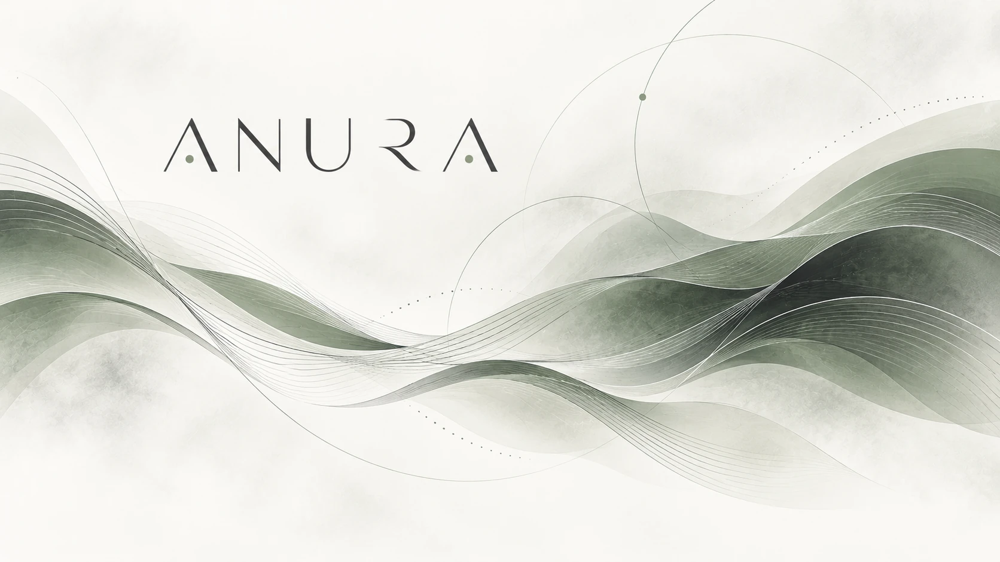
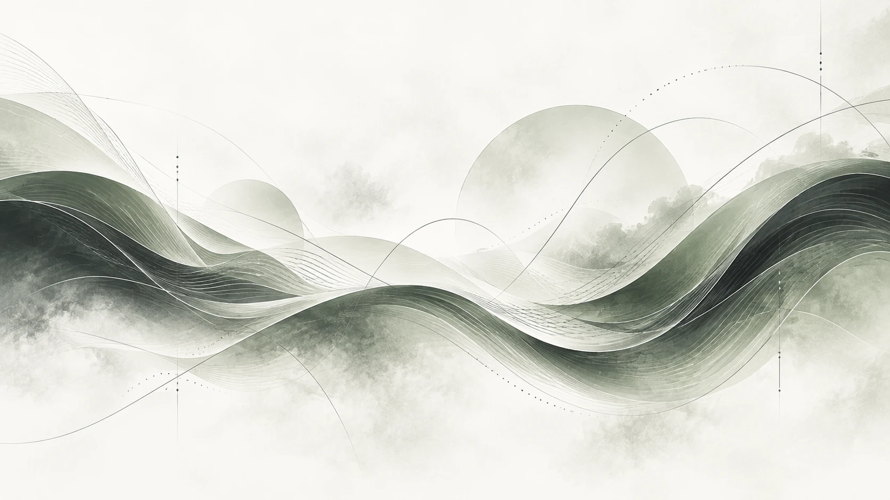
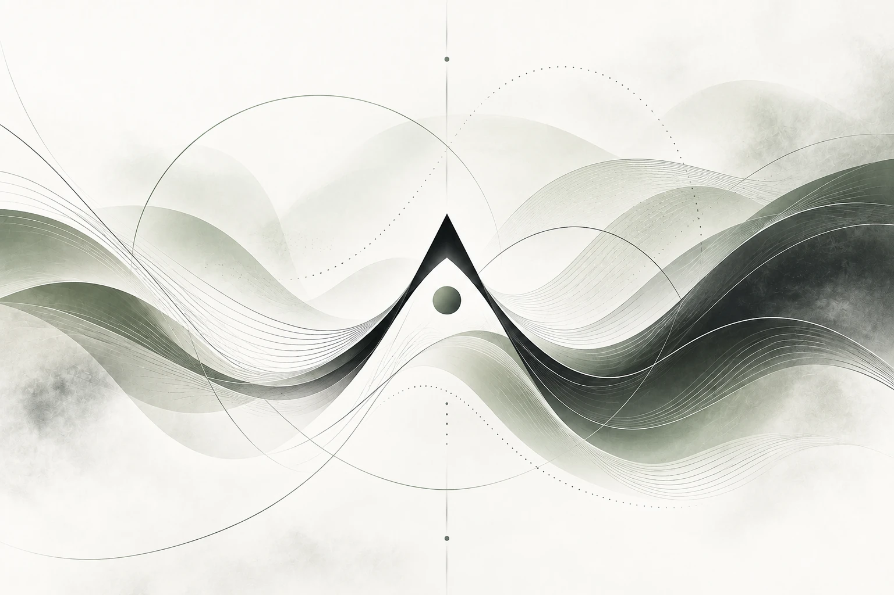
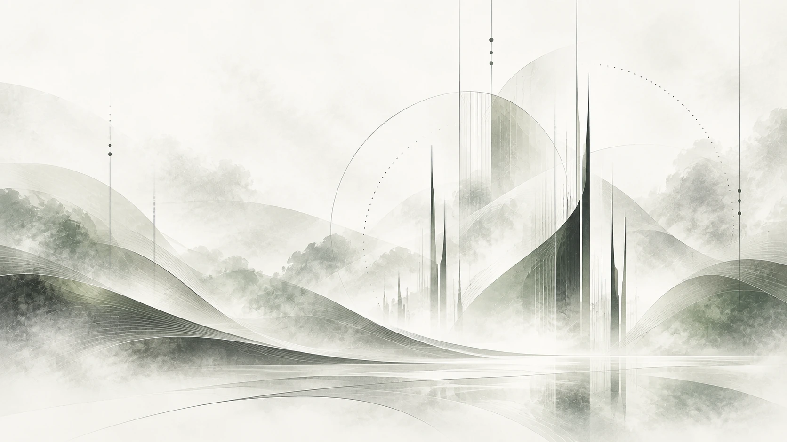

Demos & listening
Music in motion.
Three current demos — a first glimpse into the sound of ANURA.


Instrumental music shaped by motion, atmosphere and weight.
Demos & listening
Three current demos — a first glimpse into the sound of ANURA.
About ANURA
ANURA is an instrumental band from Mannheim, with not only one, not two, but three guitar players. Why? Because we couldn't find a fourth one.
Somewhere between progressive rock, metal, atmospheric textures and the occasional questionable time signature, ANURA makes instrumental music shaped by motion, atmosphere and weight. Melodic when it wants to be, heavy when it needs to be — and hopefully never too concerned with showing off.
Image & video
Resonance, movement and shifting layers — the visual side of ANURA mirrors the music without trying to explain it.



Performance
A glimpse of ANURA live — the camera found one guitar, the band brought three.
Shows
No shows announced at the moment. New dates will appear here.
Contact, socials & downloads
For booking, press, technical information or anything else ANURA-related.
Contact
JonasMahlerMail@proton.meDownloads
Band information, current demos, contact details and press material.
Stage requirements, input list, monitoring, playback setup and stage plot.